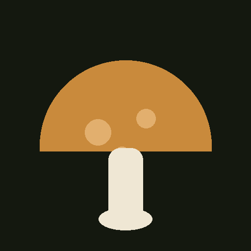

Non ti dice dove sono i funghi. Ti aiuta a capire quando vale la pena cercarli.
Pioggia, temperatura, territorio e memoria delle tue fungaie. Un'indicazione ambientale, mai una promessa di presenza o commestibilità.

“Non guardare il cielo di oggi. Guarda quello di dieci giorni fa.”